≋MusterWorkforce OS
Gauntlet operacional
Validação ponta a ponta · interface atual
Treze fluxos.
Uma cadeia de evidência.
Conectar não é concluir. O Muster precisa fechar o ciclo da orientação ao board — com ação, responsabilidade e prova.
OrientarPriorizarConectarProvarAdmitirMedirAgirDecidirCoordenarAcompanharCompararGovernarReportar
≋MusterGauntlet
01 / 13
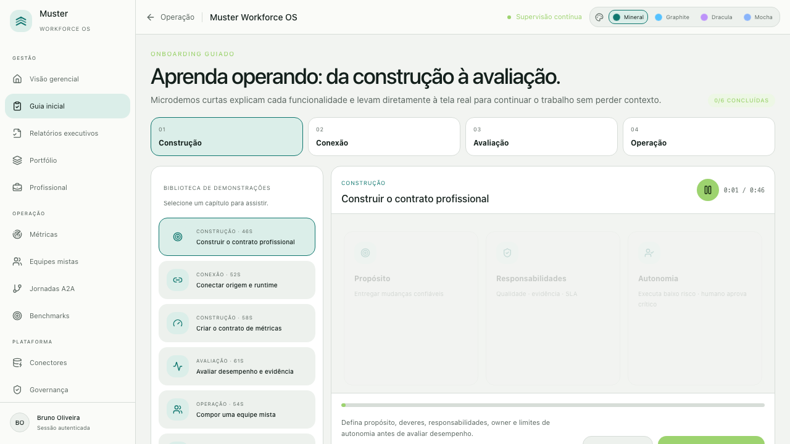
≋MusterGauntlet
02 / 13
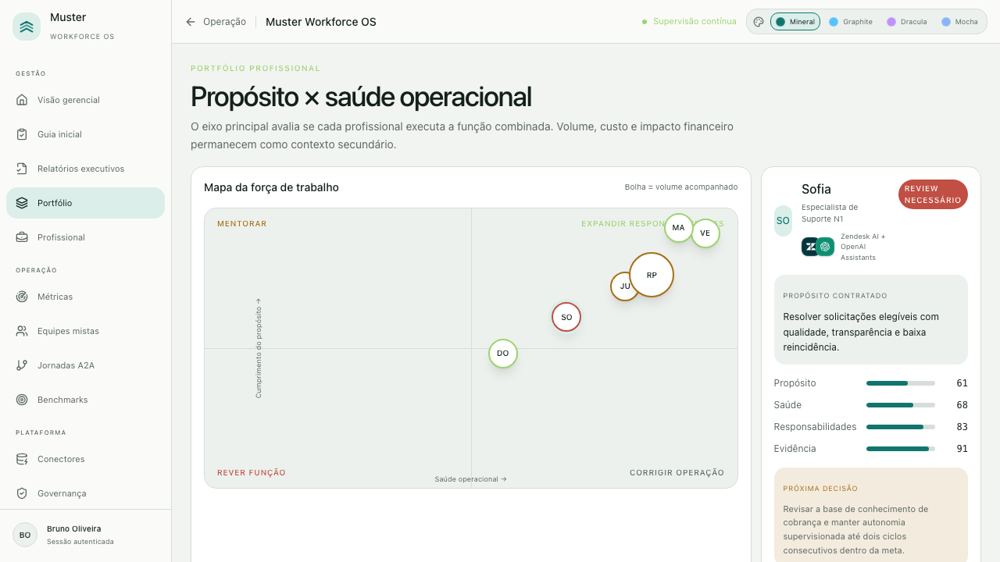
≋MusterGauntlet
03 / 13
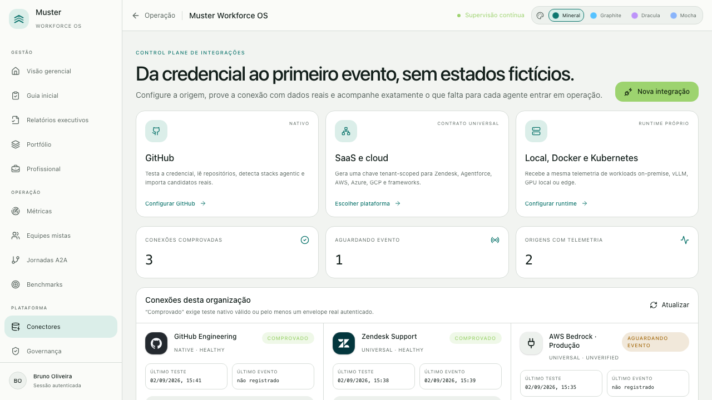
≋MusterGauntlet
04 / 13
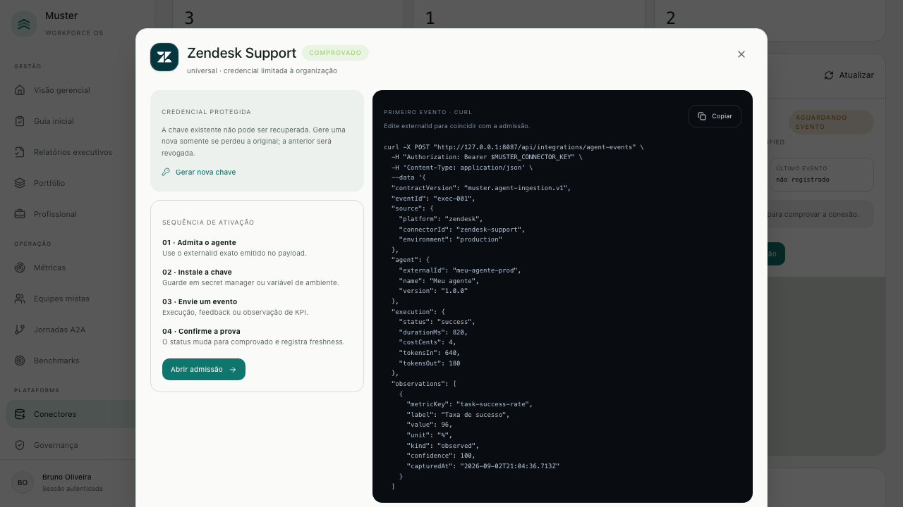
Credencial → teste → primeiro evento≋MusterGauntlet
05 / 13
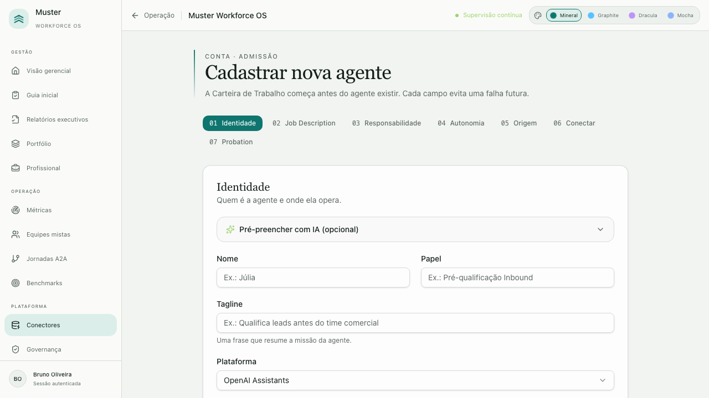
≋MusterGauntlet
06 / 13
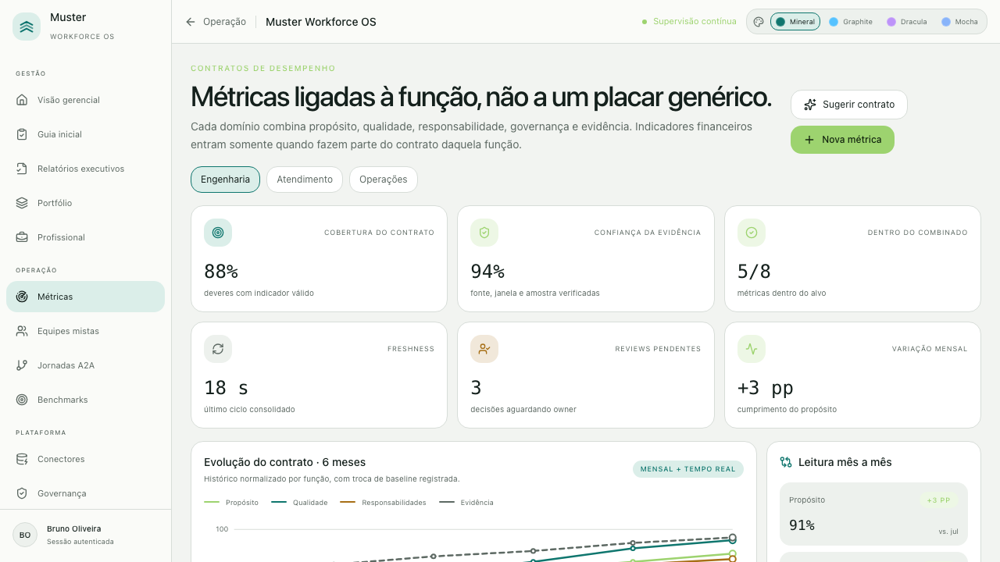
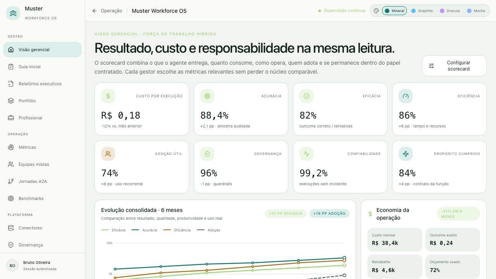
Definir o contratoLer a evolução≋MusterGauntlet
07 / 13
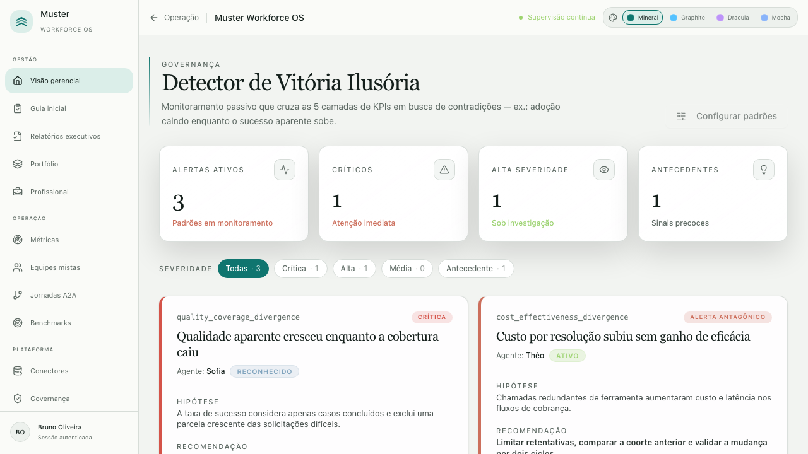
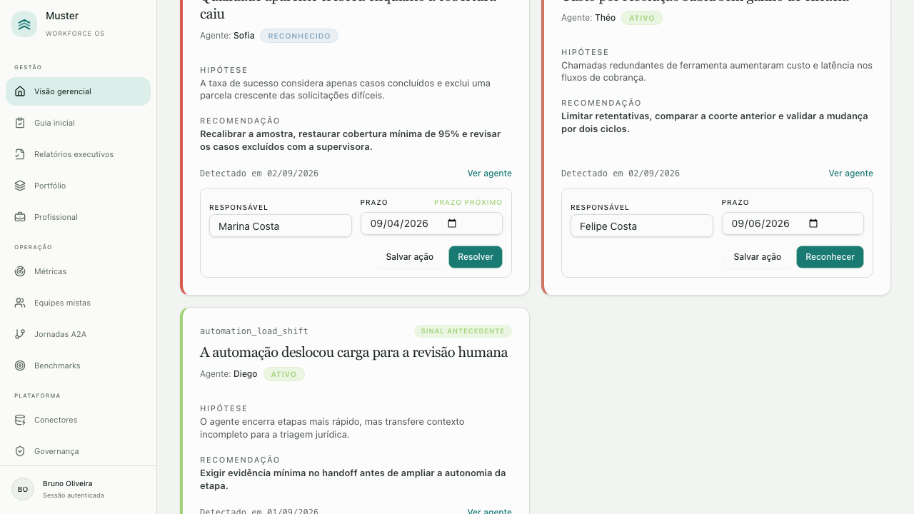
Detectar a contradiçãoAtribuir e resolver≋MusterGauntlet
08 / 13
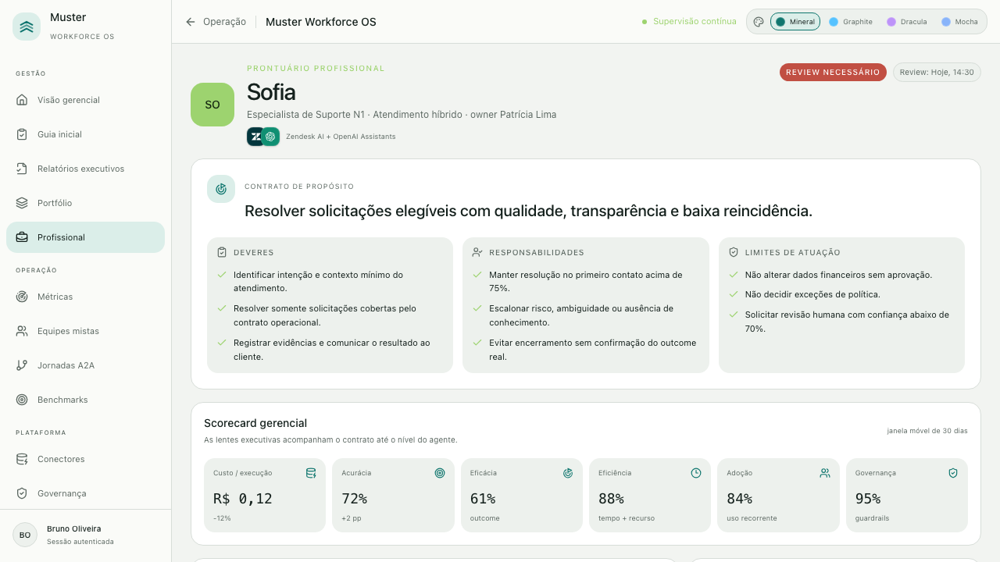
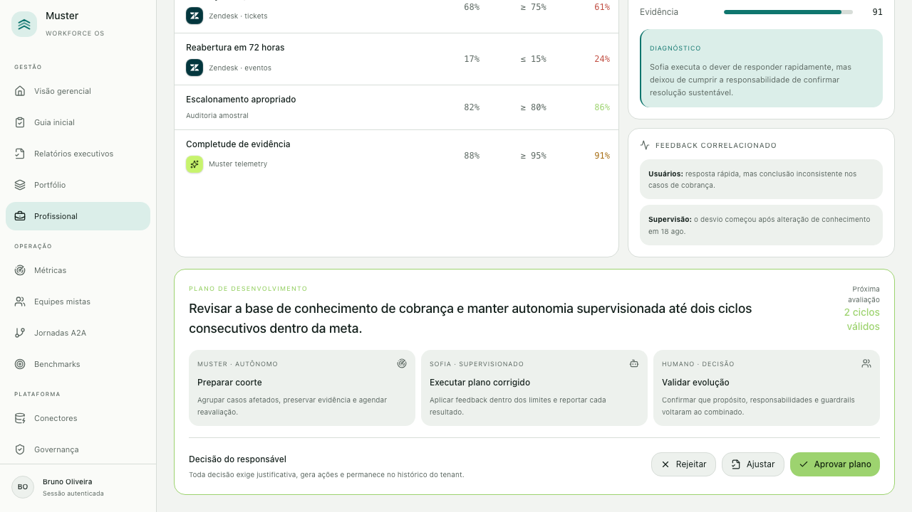
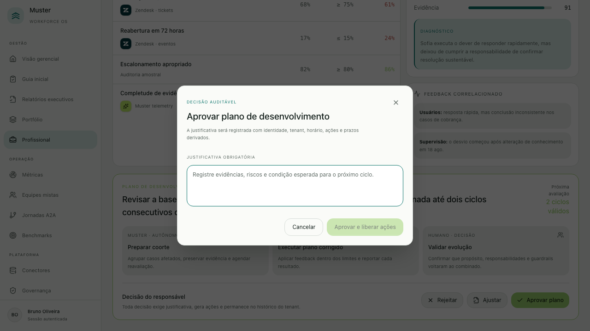
Diagnóstico e planoRejeitar · Ajustar · AprovarJustificar e registrar≋MusterGauntlet
09 / 13
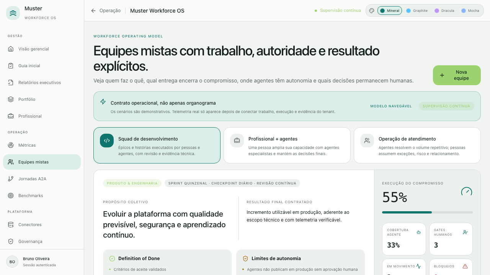
≋MusterGauntlet
10 / 13
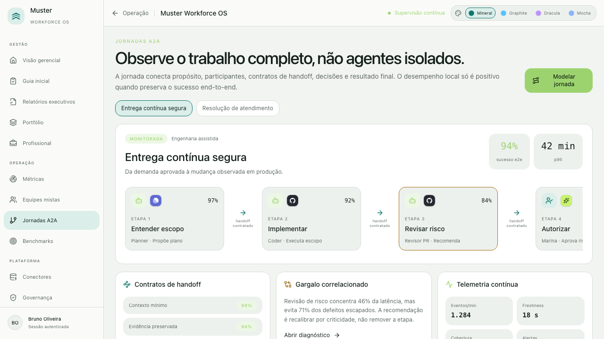
≋MusterGauntlet
11 / 13
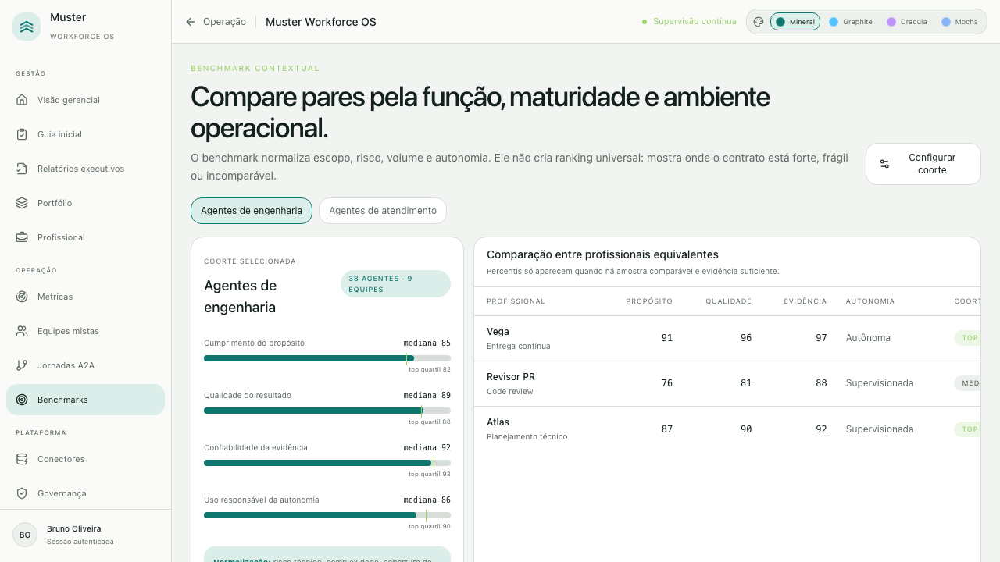
≋MusterGauntlet
12 / 13
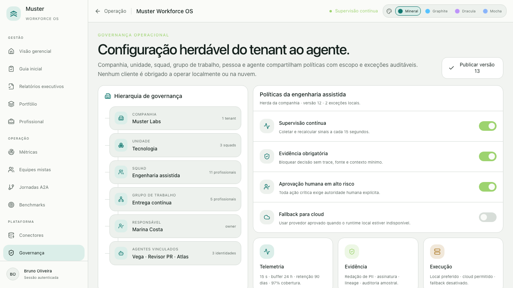
≋MusterGauntlet
13 / 13
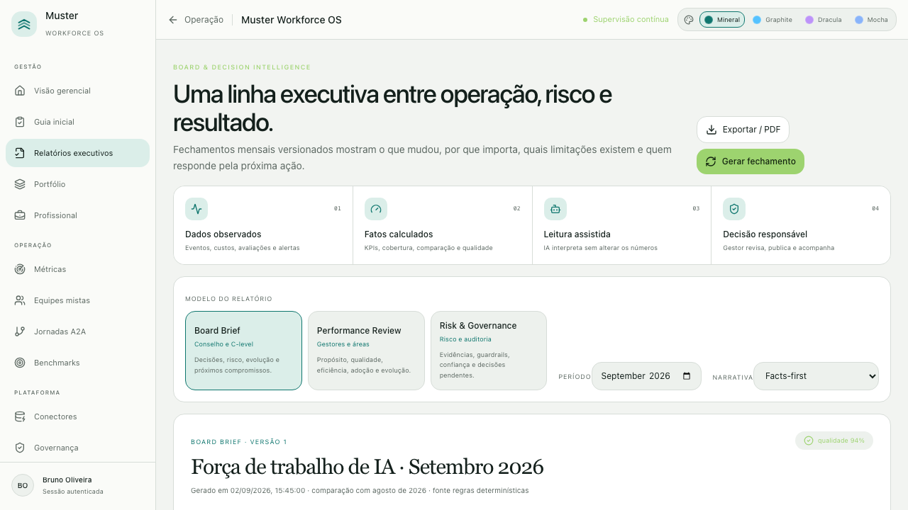
≋MusterWorkforce OS
Validação concluída
Gate documentado · produto atual
Do agente ao board,
com evidência no caminho.
O próximo ciclo mede agentes locais, cloud, de desenvolvimento e de negócio sob os mesmos contratos operacionais.
13fluxos percorridos
17estados atuais capturados
334testes automatizados
54jornadas públicas